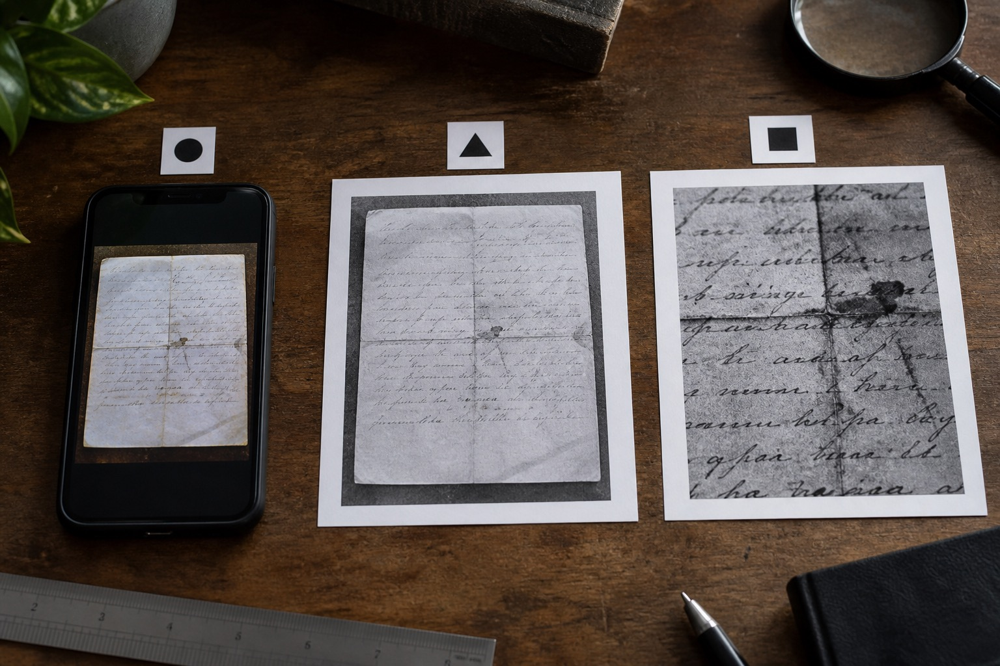

重庆笔迹鉴定收到多次转发图片，先追溯第一份原图
转发、裁切和调色会逐步丢失细节，先找到最早文件，再记录后续版本。

第一份文件通常比最后截图有用
重庆笔迹鉴定图片多次转发后，先询问是否还能找到拍摄手机里的原文件或首次扫描件。聊天截图往往包含显示缩放，后续裁切又减少页面范围。原始版本找到后，另建目录保存后续副本，并注明已经发生的处理。
查不到原图也要如实说明
模仿笔迹正文缺少完整页时，说明目前范围而不是拼接出一张假想原页。模仿签名与模仿签字区域仅有截图，也标明获取路径。图像增强只能调整已有信息的显示，不能可靠补回丢失的笔画细节；能否继续查看需要结合实际材料条件。
提交前的一项核对
第一份文件通常比最后截图有用，需要注意什么？
转发、裁切和调色会逐步丢失细节，先找到最早文件，再记录后续版本。可先按这一点核对现有材料，再说明目前缺少的内容。